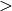
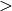

Welcome to XDQSO’s documentation!¶
The XDQSO code accompanies the XDQSO/XDQSOz papers for quasar classification and photometric redshift estimation. It allows you to calculate photometric quasar probabilities to mimick SDSS-III’s BOSS quasar target selection or to calculate photometric redshifts for quasars.
Contents:
Introduction¶
To download the code use either
svn export http://www.sdss3.org/svn/repo/xdqso/tags/v0_3 xdqso_0_3
or
svn co http://www.sdss3.org/svn/repo/xdqso/trunk xdqso-read-only
Installation only requires you to set the environment variable XDQSODATA to the data directory of the distribution (without the trailing slash). EvilUPS setup is available.
Code is available either as xdqso or as xdqsoz. For most purposes you will want to use the xdqsoz functions: these allow you to calculate photometric redshifts and quasar probabilities for arbitrary redshift ranges. The xdqsoz routines are the functions used to create the photometric quasar catalog. If you want to mimick SDSS-III’s BOSS quasar target selection you want to use the xdqso functions instead.
The functions xdqso_calculate_prob and xdqsoz_calculate_prob
calculate photometric quasar probabilities. The former can only do
this in three redshift ranges (z  2.2; 2.2
2.2; 2.2  z
3.5; z  3.5), while the latter accomodates arbitrary
redshift ranges.
z
3.5; z  3.5), while the latter accomodates arbitrary
redshift ranges.
Photometric redshifts can be calculate using the xdqsoz_zpdf and xdqsoz_eval_zpdf functions. The former prepares the parameters of the one-dimensional redshift PDF for individual objects, the latter then allows you to evaluate this PDF.
IDL code¶
Contents:
xdqso_calculate_prob (in,/dereddened)
calculate the extreme-deconvolution XDQSO QSO probability
Input:
in - structure containing PSFFLUX, PSFFLUX_IVAR, EXTINCTIONKeywords:
dereddened - psfflux, and psfflux_ivar is already dereddenedOutput:
structure containing pqso, ... (see XDQSO catalog description)History:
010-04-30 - Written - Bovy (NYU)
xdqsoz_calculate_prob (in,zmin,zmax,/dereddened,/galex,/ukidss)
calculate the extreme-deconvolution probability ratio, marginalizing over an arbitrary redshift range
Input:
in - structure containing PSFFLUX, PSFFLUX_IVAR, EXTINCTION
zmin, zmax - lower, upper bound of redshift interval
Keywords:
dereddened - psfflux, and psfflux_ivar are already dereddened
galex - GALEX fluxes are included in psfflux, psfflux_ivar, and extinction; use them
ukidss - use UKIDSS (like /galex)
Output:
out - structure containing pqso, ...History:
2010-04-30 - Written - Bovy (NYU)
xdqsoz_eval_zpdf (z,zmean,zcovar,zamp)
evaluate the photometric redshift PDF for a given redshift given means, covars, and amps
Input:
z - redshift [nz]
zmean, zcovar, zamp - from xdqsoz_zpdf
Output:
p(z)History:
2011-01-18 - Written - Bovy (NYU)
xdqsoz_marginalize_colorzprob (zmin,zmax,flux,flux_ivar,/galex,/ukidss,norm=norm,/log)
marginalize the probability of a relative flux + redshift (not a color) over redshift
Input:
zmin, zmax - redshift
flux - [nfluxes] or [nfluxes,ndata] array of fluxes
flux_ivar - [nfluxes] or [nfluxes,ndata] array of flux_ivars
Keywords:
galex - use GALEX fits
ukidss - use UKIDSS
log - calculate log
Output:
number or array of probabilitiesOptional Output:
norm - normalization factor (likelihood marginalized over redshift 0 to infinity)History:
2011-01-16 - Written - Bovy (NYU)
xdqsoz_qso_track (z,i=i,/galex,/ukidss)
calculate the mean quasar locus
Input:
z - redshift or array of redshifts [N]Optional Input:
i= dereddened i-band magnitudeKeywords:
galex - use GALEX fits
ukidss - use UKIDSS
Output:
mags[ndim,N] - array of apparent magnitudes (ugriz[NUV,FUV,YJHK])History:
2011-04-01 - Written - Bovy (NYU)
xdqsoz_zpdf, flux, flux_ivar, /galex, /ukidss, zmean=zmean, zcovar=zcovar, zamp=zamp
calculate the photometric redshift pdf using XDQSOz
Input:
flux - [nfluxes] or [nfluxes,ndata] array of fluxes
flux_ivar - [nfluxes] or [nfluxes,ndata] array of flux_ivars
Keywords:
galex - use GALEX fits
ukidss - use UKIDSS
Output:
zmean - [ngauss,ndata] array of means
zcovar - [ngauss,ndata] array of covars
zamp - [ngauss,ndata] array of amplitudes
History:
2011-01-18 - Written - Bovy (NYU)
Acknowledging XDQSO¶
Please cite the relevant papers among the following:
Think outside the color box: probabilistic target selection and the SDSS-XDQSO quasar targeting catalog, Bovy, J., et al., 2010, ApJ, 729, 141 [ApJ] [ADS]
Photometric redshifts and quasar probabilities from a single, data-driven generative model, Bovy, J., et al., 2011, submitted to ApJ
The SDSS-XDQSO photometric quasar catalog, Myers, A. D., et al., 2011, in preparation